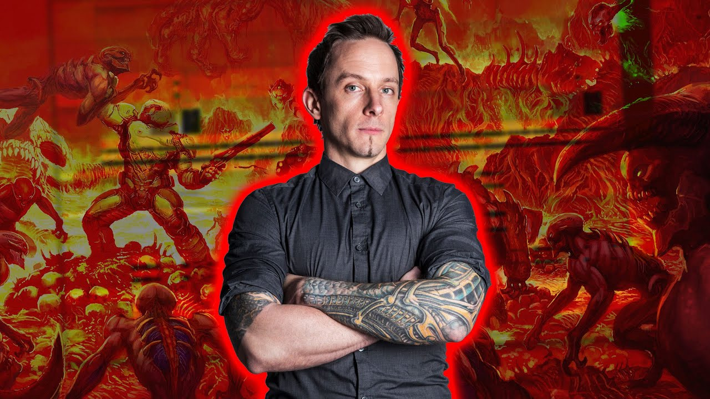

|

Mick Gordon egy ausztrál zeneszerző, aki 1985 július 9-én született. Sok évig dolgozott a játékiparban, azonban az első sikert a Killer Instict hanganyagán végzett munkája hozta el számára. A 2016-os Doom-hoz komponált zenei anyaga, amelyből egyedisége miatt kialakult a djent metal alfajaként elhíresült argent (ardjent) metal bővítette rajongói táborát. Azóta többek között a Wolfenstein és a Doom szériák folytatásaihoz szerzett aláfestő zenét. Ez utóbbi miatt sikerült több neves díjat is bezsebelnie, csak hogy párat említsünk, elnyerte a DICE díjat kiemelkedő teljesítményéért az egyedi zene komponálásban és a Game Awards legjobb zene/hangkeverés díját. |